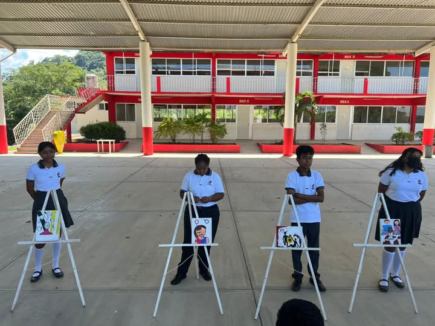

ARTE Y LETRA |
||
| LIC ANGELICA SANTIAGO LOPEZ |  | |
EN EL DESARROLO HUMANO DE ARTE Y LETRA , HACEN MUCHAS COSAS UNA DE LAS PRINCIPALES COSAS QUE HACE ESTE TALLER ES FOMENTAR LA LECTURA Y LA LETRA ,TAMBIEN APRENDES DIFERENTEA SCOSAS SOBRE LA S COSTUMBRES Y LEGUAS HACEN BARIOS PROYECTOS EN EL CUAL LO DEVEN DE PRECENTAR EN LA INSTITUCION YA QUE ESTE DESARROLLO NO CUNTA CON UN HORARIO DESPUES DE CLACES , SOLO CON BIA TELEFONICA Y HACEN LOS TRABAJOS EN CASA Y AL SIGUIENTE DIA LO PRECENTAN ESTE ES EL ULTIMO DESARROLLO HUMANO CON EL QUE CUENTA NUETRA INTITUCION EN COLEGUIO DE BACHOLLERES DEL ESTADO DE OAXACA . |
||